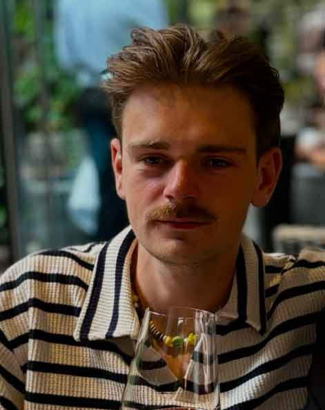

Zeger de Rooij
Zeger is een creatief persoon met een passie voor muziek. In zijn vrije tijd kun je hem vaak vinden met een koptelefoon op, luisterend naar zijn favoriete bands en het ontdekken van nieuwe artiesten. Muziek is voor hem niet alleen ontspanning, maar ook een bron van inspiratie die zijn werk en dagelijks leven verrijkt. Daarnaast is hij in zijn vrije tijd ook veel te vinden in de sportschool. Zeger is ook een fervent boekenliefhebber en verliest zich graag in spannende verhalen.

Persijn van der Jagt
Persijn is een echte liefhebber van alles wat met muziek, games en internet te maken heeft. In zijn vrije tijd duikt hij graag in de wereld van gaming, waar hij geniet van spannende avonturen en strategische uitdagingen. Muziek speelt ook een rol in zijn leven; zijn koptelefoon moet altijd opgeladen zijn. Daarnaast is hij gefascineerd door internetcultuur, van de laatste memes tot de nieuwste trends op sociale media. Deze mix van creativiteit en technologie maakt hem tot iemand die altijd op de hoogte is van wat er speelt.